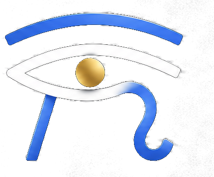

Cliente satisfeito, anos de trabalho, e mesmo assim. Não é azar e não é culpa sua.
Quem diz é o próprio Google, na página de ajuda do Perfil da Empresa.
O Google precisa entender o que você faz. Categoria certa, serviços, horário. Ficha incompleta perde pra ficha completa.
Essa não se mexe: quem está mais perto de quem pesquisa sai na frente. Por isso as outras duas pesam tanto.
Mais avaliações e nota boa ajudam, diz o Google. Responder avaliação e manter fotos também estão na lista dele.